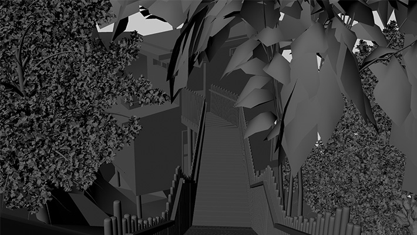

<link rel="stylesheet" href="../css/main.css">

<section class="modal-title">
Waiheke Treehouse Retreat
</section>

<section class="modal-body">
The Waiheke Island Treehouse Retreat project features two accommodation pods nested in the tree canopy, connected with boardwalks, and a third pod sitting lower in the valley. The section falls away from road level steeply, making the third pod roughly seven metres above ground level.<br><br>

The project directors were interested in a 3D model - produced from the existing technical drawings - giving a realistic representation of the site for reports and marketing.
</section>


<section class="modal-image">

</section>
